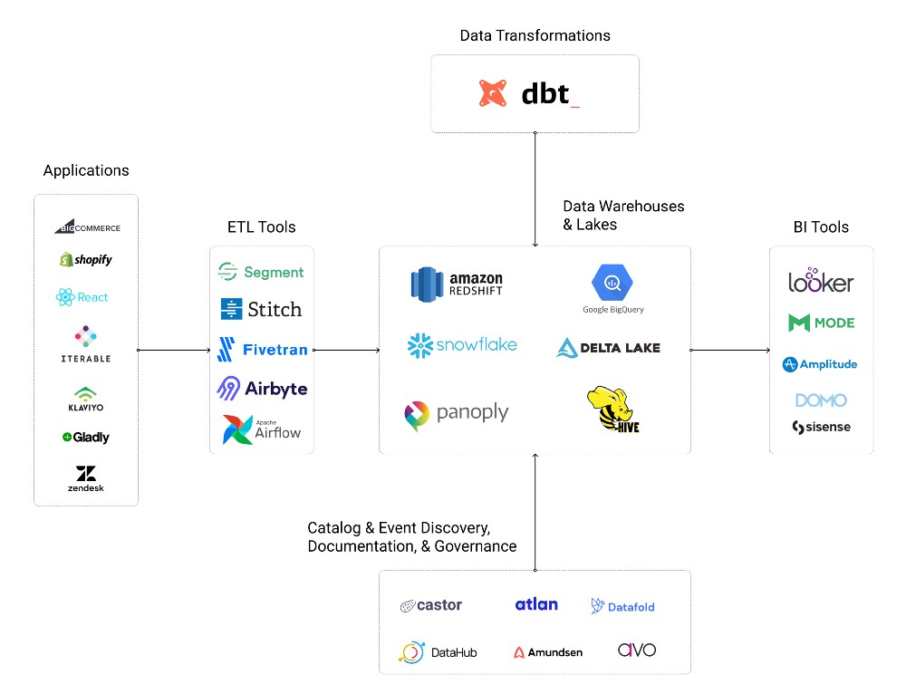

Modern Data Stack¶
What is the Modern Data Stack?¶
Reference Articles:
The Modern Data Stack commonly refers to a collection of technologies that comprise a cloud-native data platform, generally leveraged to reduce the complexity in running a traditional data platform.
The individual components are not fixed, but they typically include:¶
- A Cloud Data Warehouse, such as Snowflake, Redshift, BigQuery, or Databricks Delta Lake
- A Data Integration Service, such as Fivetran, Segment, or Airbyte
- A ELT data transformation tool, almost certainly dbt
- A BI layer, such as Looker or Mode
- A Reverse ETL tool, such as Census or Hightouch
the following as key capabilities of technology in the modern data stack:¶
- Offered as a Managed Service: Requires no or minimal setup and configuration from users and absolutely no engineering required. Users can get started today, and it’s not a vapid marketing promise.
- Centered around a Cloud Data Warehouse(CDW): Everything “just works” off-the-shelf if companies use a popular CDW. By being opinionated about where your data is, you eliminate messy integrations and tools play well together.
- Democratizes data via a SQL-Centric Ecosystem:Tools are built for data/analytics engineers and business users. These users often know the most about a company’s data, so it makes sense to try to upskill them by giving them tools that speak their language.
- Elastic Workloads: Pay for what you use. Scale up instantly to handle large workloads. Money is the only scale limitation in the modern cloud.
- Focus on Operational Workflows(Automation): Point-and-click tools are nice for low-tech users, but it’s all kind of meaningless if there’s not a viable path to production. Modern data stack tools are often built with automation as a core competency.
Popular components in Modern Data Stack¶
Reference Articles:

ETL (Extrac, Transform, Load) Tools¶
- Segment
- Stitch
- FiveTran
- AirByte (Open Source)
- Apache Airflow (Open Source)
Data Warehouses, Lakes & Lakehouses:¶
- Amazon RedShift
- Google BigQuery
- Snowflak
- Panoply
- Delta Lake on Databricks
- Apache Hive
Graph Databases & Analysis¶
Customer Data Platforms¶
- Segment Personas
- mparticle
- RudderStack (Open Source)
Data Transformation Tools¶
- Data Build Tools (DBT)
Business Intelligence (BI) Tools¶
Data Catalog & Event Discovery, Documentation, & Governance Tools ( metadata management)¶
- Castor
- Atlan
- Datafold
- Avo App
- DataHub ( Open Source)
- Amundsen ( Open Source)
- Superset (Open Source)
- Marquez (Open Source)
- OpenLineage (Open Framework)
Data Pipeline tools¶
- argo (Open Source)